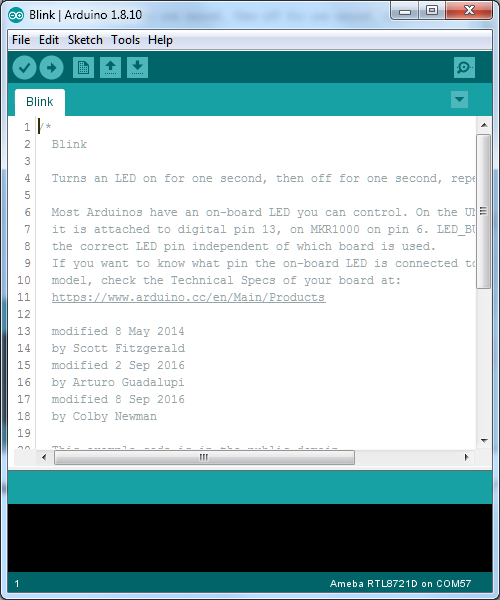
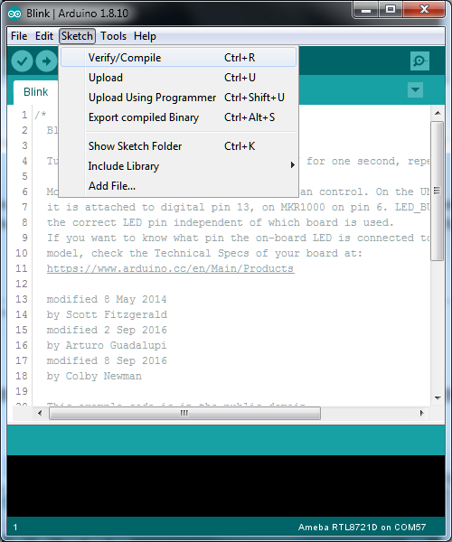
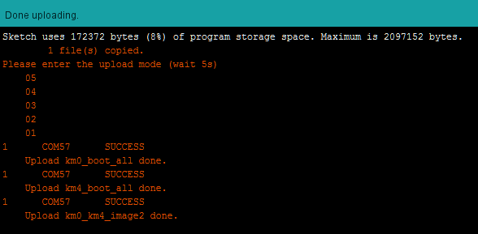

Getting Started¶
Ameba ARDUINO: Getting Started with RTL8722
Required Environment
AmebaD RTL8722CSM/RTL8722DM currently supports Windows XP/7/8/10 32-bits and 64-bits, Linux and Mac operating systems. In this documentation, please use Arduino IDE with version 1.8.12 or later.
Introduction to AmebaD RTL8722CSM/RTL8722DM
{kind=link}

D00 |
GPIOB_2 |
✓ |
ADC5 |
UART3_RX(b) |
|||
D01 |
GPIOB_1 |
✓ |
ADC4 |
UART3_TX(b) |
|||
D02 |
GPIOB_3 |
✓ |
ADC6 |
||||
D03 |
GPIOB_31 |
✓ |
|||||
D04 |
GPIOB_30 |
✓ |
|||||
D05 |
GPIOB_28 |
✓ |
|||||
D06 |
GPIOB_29 |
✓ |
|||||
D07 |
NC |
||||||
D08 |
GPIOB_22 |
✓ |
PWM14 |
||||
D09 |
GPIOB_23 |
✓ |
PWM15 |
||||
D10 |
GPIOB_21 |
✓ |
PWM13 |
UART0_RTS(b) |
SPI0_CS |
||
D11 |
GPIOB_18 |
✓ |
PWM10 |
UART0_RX(b) |
SPI0_MOSI |
||
D12 |
GPIOB_19 |
✓ |
PWM11 |
UART0_TX(b) |
SPI0_MISO |
||
D13 |
GPIOB_20 |
✓ |
PWM12 |
UART0_CTS(b) |
SPI0_CLK |
||
D14 |
GPIOA_7 |
✓ |
UART2_TX(log) |
||||
D15 |
GPIOA_8 |
✓ |
UART2_RX(log) |
||||
D16 |
GPIOA_25 |
✓ |
PWM4 |
UART3_RX(a) |
I2C0_SCL |
||
D17 |
GPIOA_26 |
✓ |
PWM5 |
UART3_TX(a) |
I2C0_SDA |
||
D18 |
GPIOB_7 |
✓ |
ADC3 |
PWM17 |
SPI1_CS |
||
D19 |
GPIOB_6 |
✓ |
ADC2 |
SPI1_CLK |
|||
D20 |
GPIOB_5 |
✓ |
ADC1 |
PWM9 |
SPI1_MISO |
||
D21 |
GPIOB_4 |
✓ |
ADC0 |
PWM8 |
SPI1_MOSI |
||
D22 |
GPIOA_28 |
✓ |
|||||
D23 |
GPIOA_24 |
✓ |
PWM3 |
UART0_CTS(a) |
I2C1_SDA |
||
D24 |
GPIOA_23 |
✓ |
PWM2 |
UART0_RTS(a) |
I2C1_SCL |
||
D25 |
GPIOA_22 |
✓ |
UART0_RX(a) |
||||
D26 |
GPIOA_21 |
✓ |
UART0_TX(a) |
||||
D27 |
GPIOA_20 |
✓ |
|||||
D28 |
GPIOA_19 |
✓ |
{kind=link}
Setting up Development Environment
Step 1. Installing the Driver
First, connect AmebaD to the computer via Micro USB:

{kind=link}
Step 2. Set up Arduino IDE
When the installation is finished, open Arduino IDE. To set up AmebaD correctly in Arduino IDE, go to “File” -> “Preferences”

Next, go to “Tools” -> “Board” -> “Boards Manager”:

The “Boards Manager” requires about 10~20 seconds to refresh all hardware files (if the network is in bad condition, it may take longer). Every time the new hardware is connected, we need to reopen the Board Manager. So, we close the Boards Manager, and then open it again. Find “Realtek AmebaD Boards” in the list, click “Install”, then the Arduino IDE starts to download required files for AmebaD.
{kind=link}
If you are facing GitHub downloading issue, please refer to the following link at “Download/Software Development Kit”.
https://www.amebaiot.com.cn/en/ameba-arduino-summary/
Finally, we select AmebaD as current connected board in “tools” -> “Board” -> “Arduino AmebaD”：

Try the First Example
Step 1. Compile & Upload

Arduino IDE opens a new window with the complete sample code.
{kind=link}
Next, we compile the sample code directly; click “Sketch” -> “Verify/Compile”
{kind=link}
Arduino IDE prints the compiling messages in the bottom area of the IDE window. When the compilation is finished, you will get the message similar to the following figure:

The Arduino IDE will compile first then upload. During the uploading process, users are required to enter the upload mode of the board. Arduino IDE will wait 5s for DEV board to enter the upload mode.

To enter the upload mode, first press and hold the UART_DOWNLOAD button, then press the RESET button. If success, you should see a green LED flashing on the DEV board.

Again, during the uploading procedure the IDE prints messages. Uploading procedure takes considerably longer time (about 30 seconds to 1 minute). When upload completed, the “Done uploading” message is printed.
{kind=link}
Step 2.Run the Blink example